A pencil-sized pen that moves its own nib by fractions of a millimetre to keep tremor out of the ink. The replay below is a simulation: the hand shakes the pen, a skid on the nose carries the writing force, and a piezo stage pulls the nib back toward the stroke the writer meant. Tremor and stage motion are magnified so the sub-millimetre motion is visible; the refill's axial slide is shown at true scale. The case list also compares the pen's tremor trackers, including the one that reads the accelerometer, and weights and gyroscopes in the cap.
—
Grey: intended stroke. Blue: ink. Coral: ink with no correction. Deviations magnified as in the 3D view.
µm, pen down only. Blue: this case. Coral: no correction.
Every simulation is Python in the repository and re-runs with one command (README.md, “Reproduce”). This page replays their recorded runs in 3D and shows their charts. Nothing here is a measurement.
| Model | What it simulates | Code | On this page |
|---|---|---|---|
| Pencil model P1 | The pencil writing on paper: hand, nose skid, spring-loaded refill, two-axis piezo stage with its Hall servo, sensors, paper contact and friction, in 25 µs steps | sim/pencil/ | Replay groups: pencil model, tremor trackers, touchdown and lift |
| Hand–pen model H1 | Pen tilt in a two-zone grip, with weights and gyroscopes in the cap | sim/handpen/ | Replay group: weights and gyroscopes |
| Sensors and trackers | 6-axis IMU and page sensor models; Kalman trackers, learned network, 20 s calibration | fusion/, opt/tracker/ | Replay group: tremor trackers; gallery |
| AI guidance | Letter prediction, style templates, guided writing, autocorrect | aiguide/ | Replay group: AI guidance; gallery |
| Design models | Loads, stroke, resonance, stress and fit of the stage; CAD of the pencil | sim/pencil/design.py, analysis/, mechanics/cad/, opt/hardware/ | Gallery; tables below |
| Twin experiments | A virtual bench that calibrates the simulator before hardware exists | s2r/ | Gallery |
| Rev A model M1 | The earlier, larger voice-coil pen | sim/pensim/ | docs/sim_report.md |
Source: README.md; CHECKPOINT.md
Charts produced by the simulations and calculations in the repository. Tap a chart to open it full size. Nothing here is a measurement; each chart carries its evidence label and the script that made it.
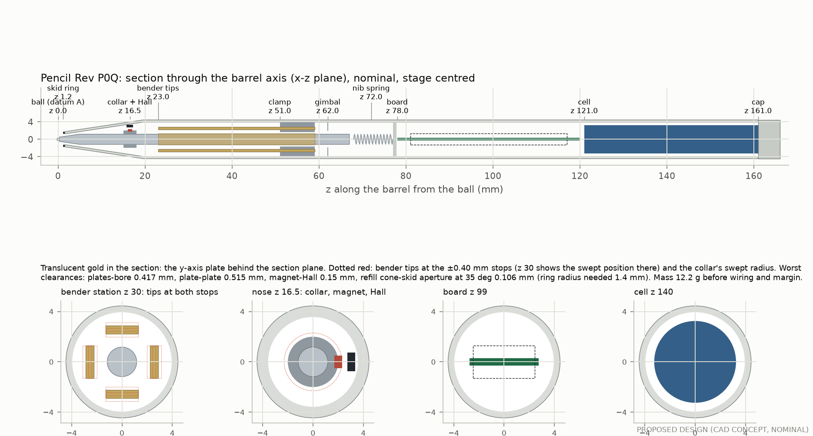
mechanics/cad/pencil_revP.py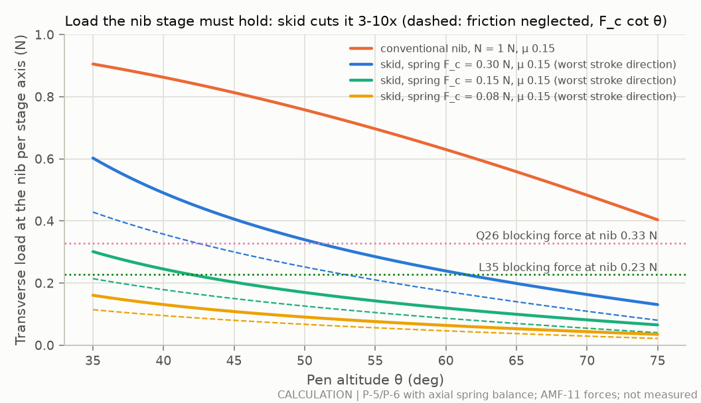
analysis/pencil_mechanisms.py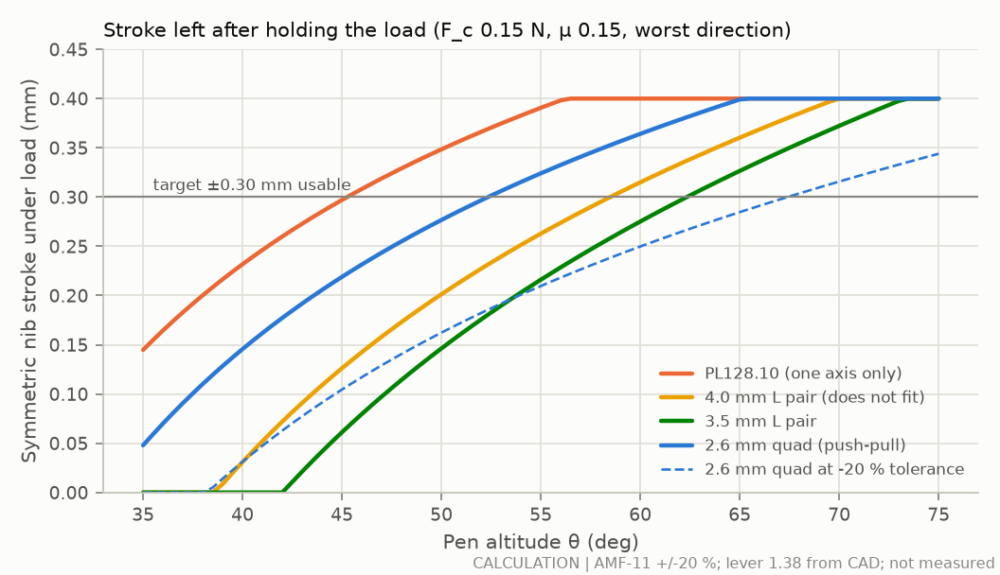
analysis/pencil_mechanisms.py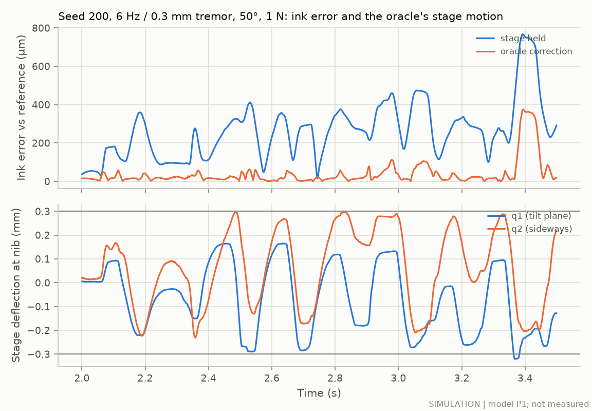
sim/pencil/run_study.py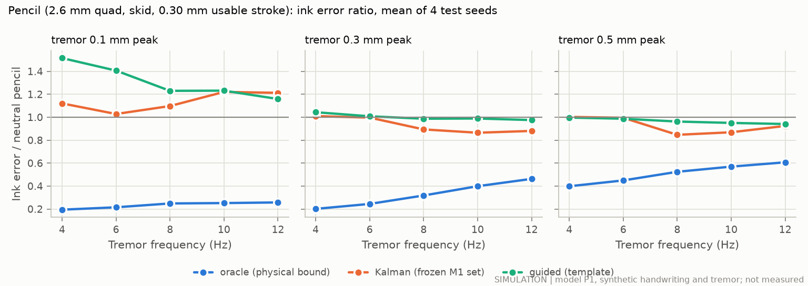
sim/pencil/run_study.py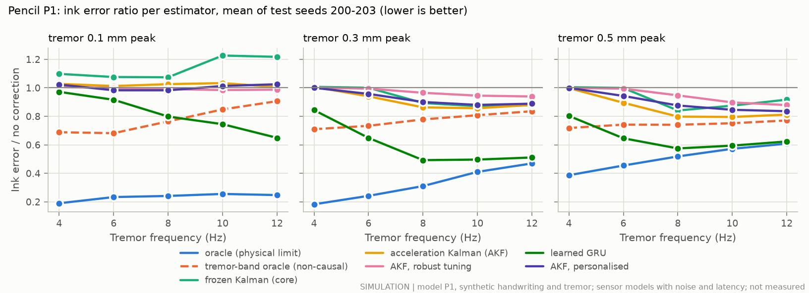
fusion/run_study.py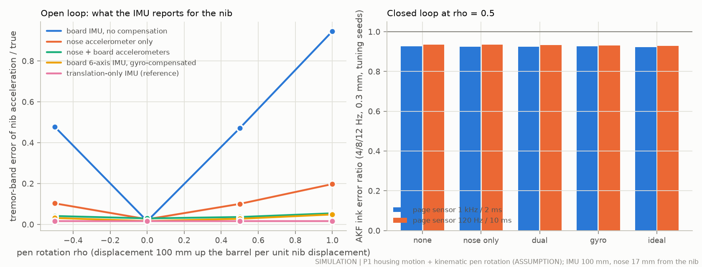
fusion/sensors.py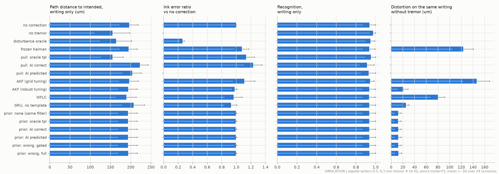
fusion/aieval.py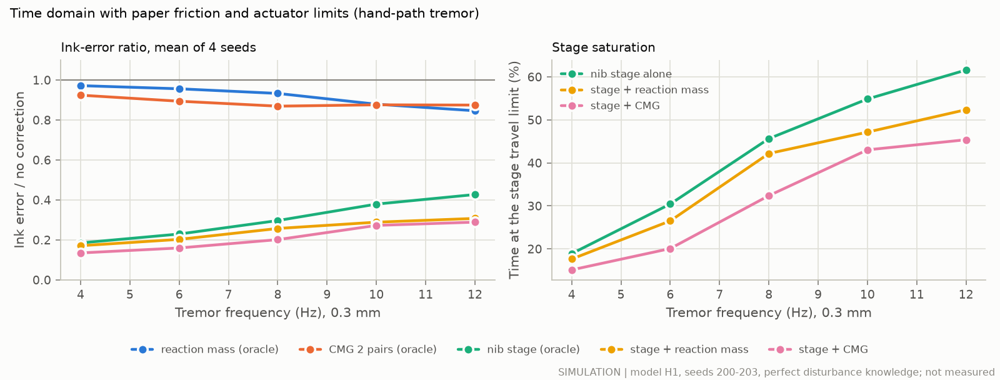
sim/handpen/run_study.py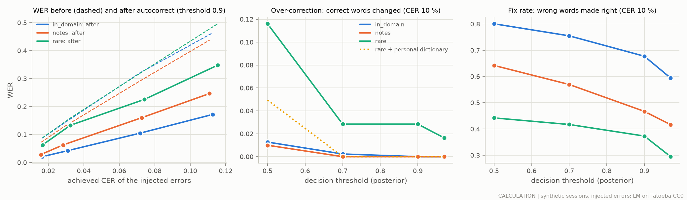
aiguide/run_autocorrect.py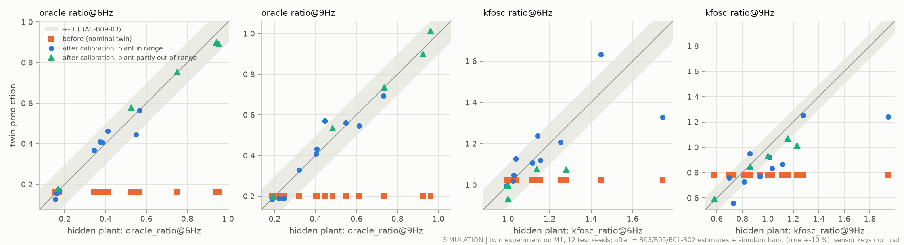
s2r/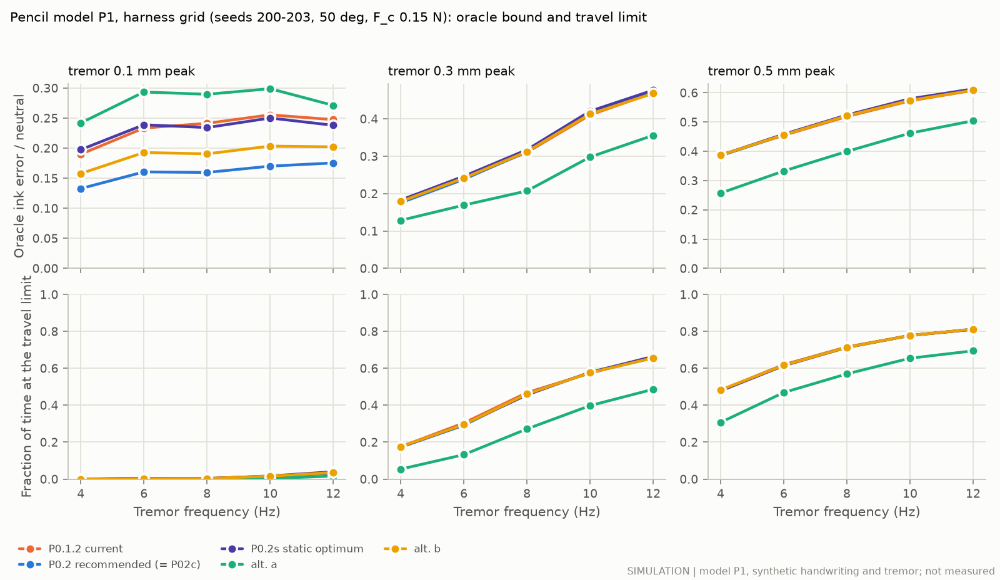
opt/hardware/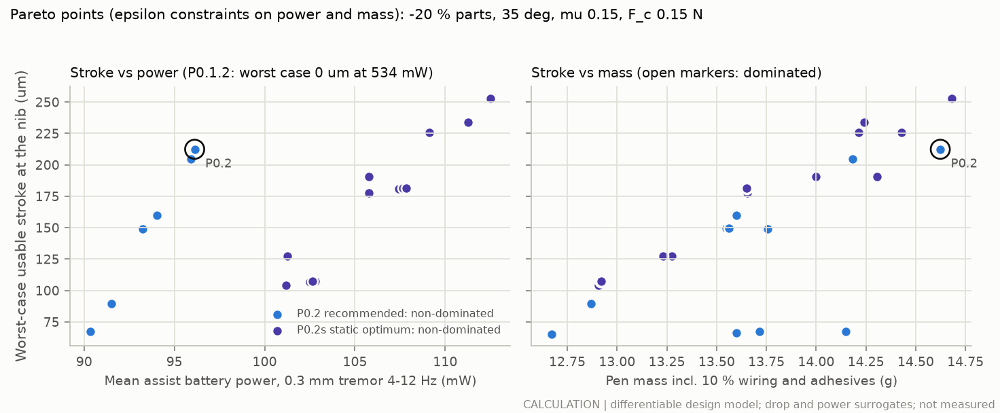
opt/hardware/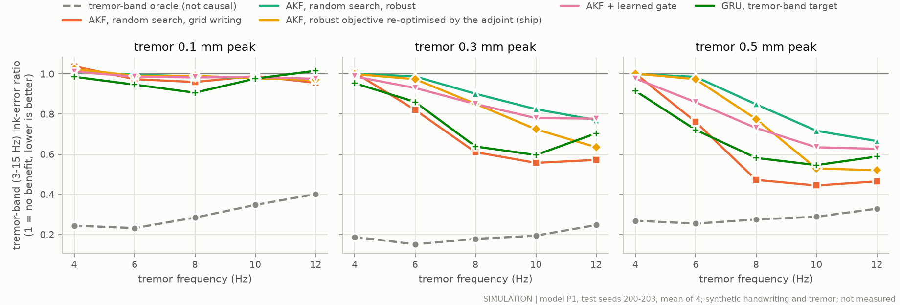
opt/tracker/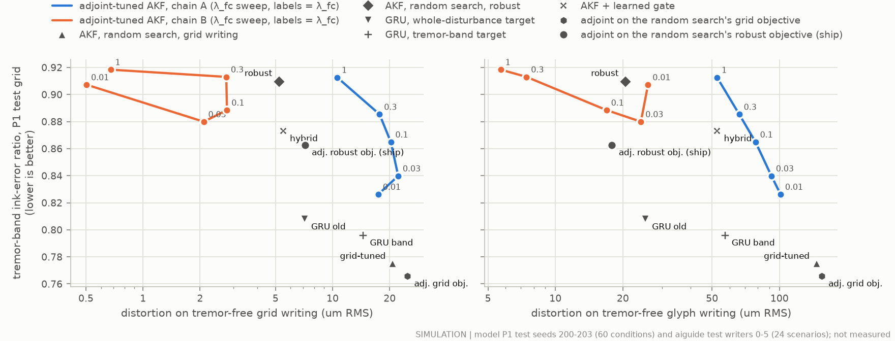
opt/tracker/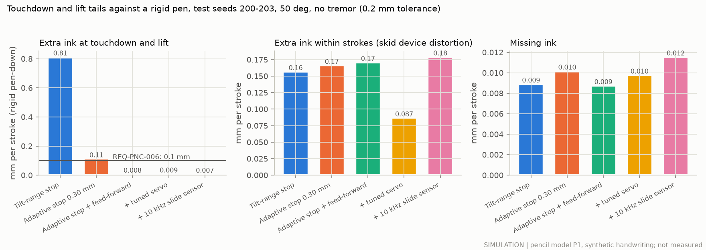
opt/touchdown/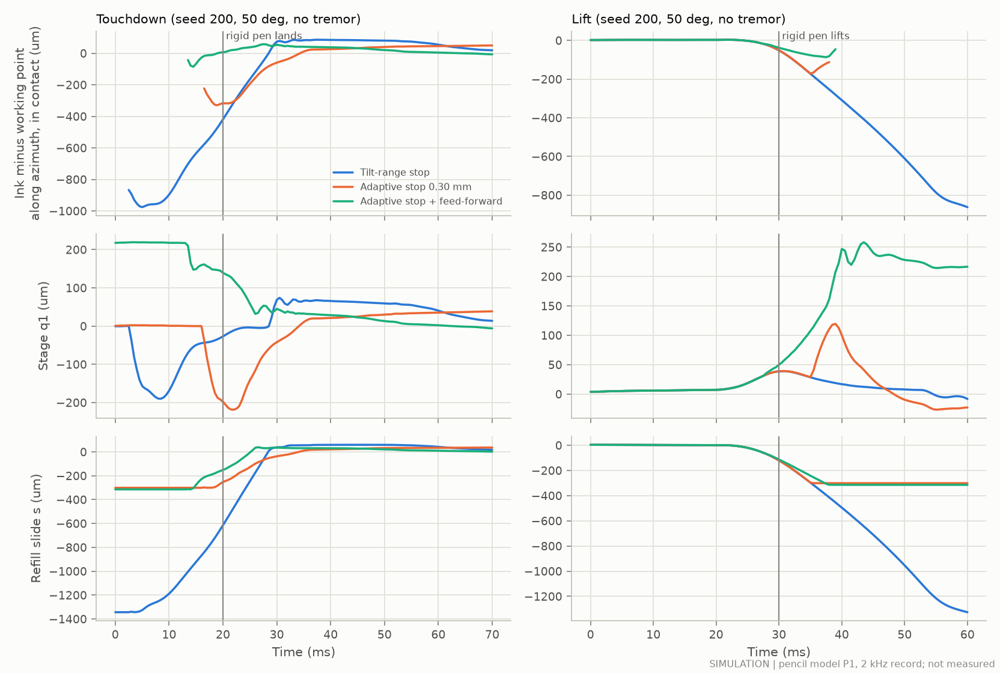
opt/touchdown/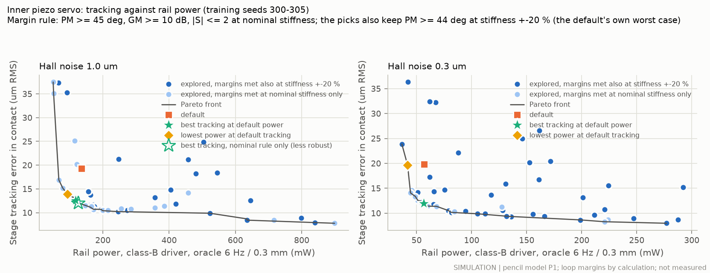
opt/touchdown/servo.pyThe slim pencil (now the secondary option) re-optimised with a differentiable copy of its design model: exact gradients (the adjoint) through the plate, leaf, lever, load, resonance, stress and fit equations, with Bayesian optimisation and CMA-ES over real parts, and the finalists ranked in the pencil model P1. Proposed; the plates are custom and must be quoted and tested.
| Quantity | Current pencil (P0.1.2) | Optimised (P0.2) |
|---|---|---|
| Worst-case usable stroke (−20 % parts, 35°) | 0 µm (raw negative) | 212 µm |
| Loaded stroke, typical writing (50°) | 277 µm | 476 µm |
| Force the stage can push with, at the nib | 0.33 N | 0.64 N |
| First resonance | 192 Hz | 213 Hz |
| Battery life with assist on (worst 0.3 mm case) | 0.50 h | 2.73 h |
| Pen mass including 10 % | 13.4 g | 14.6 g |
Source: results/opt/hardware.json (opt/hardware/; docs/opt_hardware.md; DEC-030)
The tracker decides what the stage cancels. It was rewritten so that its exact gradient (backpropagation through time, the discrete adjoint of the filter) could tune all 23 settings on simulated writing, and to train learned trackers on the right target. Tremor-band error left as a fraction of no correction on the test grid (lower is better); “moves tremor-free writing”: on smooth grid writing / on sharper glyph writers. The gain is modest; no setting found both the smooth-writing set's benefit and a small shift on sharp writers.
| Tracker | Error left, 3–15 Hz, mean | Error left, 8–12 Hz at 0.3–0.5 mm | Moves tremor-free writing | Path to the intended letters |
|---|---|---|---|---|
| Limit: perfect knowledge of the 3–15 Hz tremor (not causal) | 0.26 | 0.25 | — | 225 µm |
| Old tracker: Kalman on the page position, frozen | 0.85 | 0.59 | 34 / 123 µm | 240 µm |
| Accelerometer tracker, random search on smooth writing | 0.78 | 0.52 | 21 / 146 µm | 235 µm |
| Accelerometer tracker, random search, robust (previous default) | 0.91 | 0.79 | 5 / 21 µm | 247 µm |
| Accelerometer tracker, robust objective optimised by backpropagation (proposed default) | 0.86 | 0.67 | 7 / 18 µm | 242 µm |
| Accelerometer tracker, smooth-writing objective optimised by backpropagation | 0.77 | 0.51 | 25 / 154 µm | 234 µm |
| Learned network, whole-disturbance target (earlier) | 0.81 | 0.71 | 7 / 25 µm | 282 µm |
| Learned network, tremor-band target | 0.80 | 0.61 | 14 / 57 µm | 241 µm |
| Accelerometer tracker + learned authority gate | 0.87 | 0.73 | 5 / 53 µm | 246 µm |
Source: results/opt/tracker.json (opt/tracker/; docs/opt_tracker.md)
Ink the pencil draws at touchdown and lift that a rigid pen would not (within 30 ms of a transition), per stroke, on the test seeds. The feed-forward uses sensors the pen already has: it pre-positions the stage in the air, cancels the measured refill slide, switches the load bias at contact and detects contact early from the Hall sensor. Its structure was chosen with adjoint gradients of a differentiable reduced model; its 11 parameters and the stop margin by Bayesian optimisation on P1. The open risk is bounce: 1.7 contact transitions per pen-down against 1.2.
| Pen | Tail ink per stroke, 35° / 50° / 75° | In-stroke extra ink, 50° | Correction left, 6 Hz 0.3 mm, 50° | Drive power, 50° |
|---|---|---|---|---|
| Tilt-range front stop (P0.1.2) | 0.347 / 0.813 / 0.419 mm | 0.16 mm | 0.22 | 136 mW |
| Adaptive stop alone, 0.30 mm margin | 0.135 / 0.114 / 0.000 mm | 0.17 mm | 0.27 | 134 mW |
| Adaptive stop 0.31 mm + optimised feed-forward | 0.005 / 0.008 / 0.000 mm | 0.17 mm | 0.25 | 144 mW |
| … + optimised servo | 0.012 / 0.009 / 0.000 mm | 0.09 mm | 0.25 | 127 mW |
Source: results/opt/touchdown.json (opt/touchdown/; docs/opt_touchdown.md; DEC-026)
The stage's position servo, tuned by Bayesian optimisation for tracking against drive power, with every candidate held to the loop-margin rule (phase margin ≥ 45°, gain margin ≥ 10 dB, and no worse than today's at ±20 % stage stiffness). Proposed only: it must be re-run on the stage once it is identified on the bench.
| Servo | Integral corner / damping / derivative filter / feed-forward | Tracking error | Drive power | Phase margin, nominal / ±20 % | Correction left, test grid mean |
|---|---|---|---|---|---|
| P0.1.2 servo | 25 Hz / 0.40 / 600 Hz / 1.00 | 19.3 µm | 136 mW | 46.3° / 44.0° | 0.356 |
| Optimised servo | 53 Hz / 0.32 / 654 Hz / 1.10 | 12.5 µm | 117 mW | 45.2° / 44.2° | 0.328 |
Source: results/opt/servo.json (opt/touchdown/servo.py; DEC-027)
Pen at 50° with 1 N of writing force, nib friction 0.15, skid friction 0.12 (assumed) and a 0.15 N axial nib spring (assumed). Any stage that moves the nib across the barrel must hold the paper's reaction. Behind the skid it drops by a factor of 4.5. Over the whole envelope (35–75°, μ 0.05–0.35, Fc 0.08–0.30 N) the skid design load spans 0.026–1.07 N; the dynamic forces of tremor are under 4 % of the static load.
| Quantity | Pencil-form pen (nib carries the force) | Skid architecture |
|---|---|---|
| Normal force at the nib | 1.000 N | 0.196 N |
| Stage load, tilt plane, static (N cos θ, or Fc cot θ) | 0.643 N | 0.126 N |
| Design load per stage axis (worst stroke direction, with friction) | 0.758 N | 0.170 N |
| Skid normal force / friction | — | 0.804 / 0.097 N |
| Axial load | 0.766 N | 0.150 N (spring Fc) |
Source: results/pencil/mechanisms.json (analysis/pencil_mechanisms.py)
Design load 0.170 N per axis at the nib (skid architecture, worst stroke direction); the usable correction target is ±0.30 mm. Catalogue data are manufacturer statements with ledger ids in the source file; strokes, forces and powers are calculations; the voice coil is a magnetostatic simulation.
| Mechanism | Nib stroke under load | Force at nib | First resonance | Static hold power | Verdict |
|---|---|---|---|---|---|
| custom 2.6 mm quad, push-pull pair per axis | ±277 µm ±162 at −20 % | 0.329 N | 192 Hz | ≈ 0 (capacitive) | recommended Zero static hold power; needs snubbers and a compliant nose to survive a drop |
| custom 3.5 mm L pair | ±146 µm ±30 at −20 % | 0.227 N | 165 Hz | ≈ 0 (capacitive) | limited use Stroke margin and snubber web too small |
| PL128.10 as-is (6.15 mm), one axis | ±348 µm ±226 at −20 % | 0.395 N | 199 Hz | ≈ 0 (capacitive) | limited use Only one fits the bore; for the one-axis rig |
| custom 4.0 mm L pair (P0.1.0 concept) | ±201 µm ±84 at −20 % | 0.259 N | 173 Hz | ≈ 0 (capacitive) | rejected Does not fit the bore (CAD) |
| PL112.10 / PL122.10 / PL127.10 / PL140.10 (catalogue) | — | — | — | — | rejected 9.6-11 mm wide, does not fit the 7.9 mm bore; the same ceramic is used as custom-width plates |
| Amplified piezo stack APA50XS (Cedrat, AMF-14) | — | 3.520 N | — | ≈ 0 (capacitive) | rejected Does not fit (10.3 mm section diagonal) and needs 150 V drive |
| Moving-magnet voice coil in the 7.9 mm bore (magpylib, em_planar topology) | — | — | — | 2.4 W | rejected Even with the skid, holding the transverse load costs 2.4 W (8 x the thermal allowance 0.31 W; battery 0.1 h) |
| Piezo ultrasonic screw motor SQL-RV-1.8 (New Scale SQUIGGLE, AMF-15) | — | — | — | ≈ 0 (self-locking) | rejected 1 M-cycle life is 35 h of assisted writing at 8 Hz; ~1 W; speed marginal; not needed as a bias because the piezo stage holds at zero power |
| Shape-memory-alloy wire (NiTi, 50 um, antagonistic pair per axis) | — | — | — | — | rejected Thermal bandwidth ~0.5 Hz (17x short at 8 Hz); efficiency ~1.6 %; continuous heating to hold |
| Linear resonant actuator (6 mm coin, AMF-45) as a reaction-mass corrector | — | — | — | — | limited use Cannot move the nib |
| Gyroscope (brass rotor 7 x 10 mm, 3.3 g, 50 000 rpm) | — | — | — | — | rejected Gyroscopic torque 2 % of the hand's tremor torque; does not resist translation (the dominant nib tremor); precession cross-couples axes; spin-up power and 3 g |
| Reaction mass / active tuned-mass absorber (the 3.45 g cell moved +/-0.5 mm) | — | — | — | — | rejected 0.6-5.7 % of the grip-spring tremor force (575 N/m x 0.3 mm); needs ~68 g x mm |
Source: results/pencil/mechanisms.json (analysis/pencil_mechanisms.py; docs/pencil_mechanisms.md §3)
Can a moving weight or a gyroscope in the cap steady the pen? Ink error left at 0.3 mm tremor, 4–12 Hz, as a fraction of no correction, with perfect knowledge of the tremor (an upper bound). The hand pushes the pen around with about 0.17 N through the grip; a few grams moving ±1 mm in the cap push back with only 2–30 mN, and a gyroscope only resists the pen's rotation, which is tiny. Helpers matter only where the stage runs out of travel.
| Helper | Ink error left, alone | With the nib stage | Stage time at its limit | Cost |
|---|---|---|---|---|
| Piezo nib stage (current design) | 0.18–0.43 | — | 19–62 % | in the CAD |
| Tungsten slug in the cap, pushed on 3 axes (5.15 g) | 0.85–0.97 | 0.17–0.31 | 18–52 % | pen 17.6 g; takes 50 % of the cell |
| Two pairs of gyroscopes on motorised gimbals | 0.87–0.92 | 0.13–0.29 | 15–45 % | pen 25.1 g; no room left for the cell |
Source: results/pencil/inertial.json (sim/handpen/, hand-pen model H1; docs/inertial_stabilisation.md)
Passive ways to steady the pen at the paper or in the grip, relative to the pencil as designed (0.3 mm tremor, 4–12 Hz). Tremor and handwriting strokes share frequencies, so whatever filters the tremor also shrinks and delays the letters: against what the writer meant, the net change is close to nothing.
| Option | Tremor in the ink | Net error against the intended writing | Letter size | Drag felt |
|---|---|---|---|---|
| Pencil as designed (skid friction 0.12, normal grip) | 1 | 1 | 100 % | 0.11 N |
| Skid friction 0.25 (now 0.12) | 0.83–0.86 | 1.00–1.06 | 81 % | 0.20 N |
| Skid friction 0.40 | 0.73–0.82 | 1.07–1.17 | 84 % | 0.28 N |
| Damped roller at the nose, 10 N s/m | 0.52–0.62 | 0.97–1.02 | 76 % | 0.19 N |
| Soft grip sleeve, half the grip stiffness | 0.83–0.96 | 0.96–1.07 | 93 % | 0.11 N |
| Soft grip sleeve, a quarter | 0.69–0.94 | 1.14–1.25 | 84 % | 0.11 N |
| 10 g heavier cap | 0.78–1.00 | 0.86–1.01 | 101 % | 0.11 N |
| Tuned mass damper, 8 Hz | 0.92–1.06 | 0.95–1.05 | 100 % | 0.11 N |
| Spinning gyroscope, 30 000 rpm | 0.97–1.00 | 0.98–1.00 | 100 % | 0.11 N |
Source: results/pencil/inertial.json passive (docs/inertial_stabilisation.md §5.6)
Ink error divided by the error of the same pencil with its stage held still, on synthetic handwriting (test seeds 200–203). Below 1 is better. The physical limit shows what the stage can do when it knows the tremor exactly; the estimator shows what the pen's own sensors achieve today. Guided mode on the feature course (path distance): corner edge 188 → 161 µm, dot 155 → 90 µm, hatch 174 → 158 µm, fast stroke 112 → 20 µm, circle 348 → 174 µm, spiral 334 → 202 µm.
| Case | 4 Hz | 6 Hz | 8 Hz | 10 Hz | 12 Hz |
|---|---|---|---|---|---|
| Physical limit (perfect intent), 0.1 mm tremor | 0.19 | 0.21 | 0.25 | 0.25 | 0.26 |
| Physical limit (perfect intent), 0.3 mm tremor | 0.20 | 0.24 | 0.32 | 0.40 | 0.46 |
| Physical limit (perfect intent), 0.5 mm tremor | 0.40 | 0.45 | 0.52 | 0.57 | 0.61 |
| Tremor estimator (Kalman), 0.1 mm tremor | 1.12 | 1.03 | 1.10 | 1.22 | 1.21 |
| Tremor estimator (Kalman), 0.3 mm tremor | 1.01 | 1.00 | 0.89 | 0.86 | 0.88 |
| Tremor estimator (Kalman), 0.5 mm tremor | 1.00 | 0.99 | 0.85 | 0.87 | 0.92 |
| Time at travel limit, physical limit, 0.3 mm | 16 % | 27 % | 39 % | 57 % | 65 % |
Source: results/pencil/sim_metrics.json grid_summary (sim/pencil/run_study.py)
With the skid, a light spring pushes the refill out whenever the pen is lifted. If its front stop allows for every tilt, the ball lands first and slides while the refill retracts, drawing a tail at every touchdown and lift. A stop that follows the pen's tilt, set by a slow trim motor from the IMU, cuts the tails; the margin must still leave the refill room to slide while the stage corrects. Ink is compared with a rigid pen on the same writing (0.2 mm tolerance). The error ratio is the ink error with perfect disturbance knowledge divided by the error with no correction; lower is better.
| Front stop | Extra ink per stroke, mm | Missing ink per stroke, mm | Error ratio |
|---|---|---|---|
| Whole tilt range (current CAD) | 1.15 | 0.01 | 0.24 |
| Tilt-adaptive, 0.30 mm margin | 0.33 | 0.01 | 0.30 |
| Tilt-adaptive, 0.20 mm margin | 0.28 | 0.01 | 0.45 |
| Tilt-adaptive, 0.10 mm margin | 0.31 | 0.09 | 0.69 |
Source: results/pencil/touchdown_tails.json (sim/pencil/diag_touchdown_tails.py)
90 mAh cell at 3.7 V, 80 % usable (assumed); electronics 65 mW including a 50 mW optics placeholder (assumed). The piezo holds the static load for free; the driver's quiescent draw and the sensor noise that the damping loop turns into drive power set the battery life.
| Mode | Two DRV2700 drivers (bench) | Charge-recovery driver (product) |
|---|---|---|
| Recording only | 65 mW, 4.1 h | 65 mW, 4.1 h |
| Tremor assist, 6 Hz, Hall noise 1 µm | 320 mW, 0.8 h | 97 mW, 2.7 h |
| Guided assist, 6 Hz tremor | 389 mW, 0.7 h | 110 mW, 2.4 h |
| Tremor assist, 6 Hz, Hall noise 0.3 µm | 216 mW, 1.2 h | 80 mW, 3.4 h |
Source: results/pencil/sim_metrics.json battery (sim/pencil, model P1)
Recording writing on paper needs a page-referenced sensor near the nib. The only camera found that fits the nose runs at 30 fps (OVM6948, OPT-36). With the IMU bridging between samples, guided mode needs at least 120 Hz with 10 ms latency to keep its benefit (feature course, 6 Hz 0.3 mm tremor, model M1).
| Page sensor | Guided path error, RMS | Relative to no correction |
|---|---|---|
| 30 Hz, 35 ms | 243 µm | 0.76 |
| 60 Hz, 19 ms | 167 µm | 0.52 |
| 120 Hz, 10 ms | 136 µm | 0.42 |
| 250 Hz, 6 ms | 125 µm | 0.39 |
| 1000 Hz, 3 ms | 125 µm | 0.39 |
| 1000 Hz, 2 ms (parameter default) | 139 µm | 0.43 |
Source: results/sim/page_sensor_rate.json (sim/diag_page_sensor_rate.py)
Four 2.6 mm piezo plates around a D1 refill in the 7.9 mm bore, a skid ring on the nose, a rear gimbal, a rigid-flex board and a 6.5 × 40 mm cell. Nominal dimensions and rigid parts; the checks are geometric.
| Check | Result |
|---|---|
| Mass before wiring, adhesive and margin | 12.2 g |
| Centre of mass from the nib | 88.0 mm of 166 mm |
| Lever, nib per collar motion | 1.363 |
| Decoupling leaf free span | 5.0 mm |
| Plate corner to bore (tips at the ±0.40 mm stops) | 0.417 mm |
| Plate to plate / plate to refill | 0.515 / 0.892 mm |
| Thinnest snubber web | 0.488 mm |
| Refill cone to skid aperture at 35°, full travel | 0.106 mm |
| Nib assembly swept through ±0.40 mm | no interference |
| All geometric checks | pass |
Source: results/cad/pencil_revPQ_summary.json (mechanics/cad/pencil_revP.py)
Buy what exists; make the custom-width piezo plates (a supplier custom part), the precision mechanics, the board, the drive stage and the cell.
| Item | Decision | Note |
|---|---|---|
| D1 low-force refills (gel, rollerball, fineliner inserts) | buy | select by EXP-Q02 |
| PICMA PL128.10 benders | buy | 1-axis bench stage and characterisation (AMF-11) |
| Custom 2.6 x 36 x 0.67 mm multilayer benders (4 per pen) | make (supplier custom part) | request quotes for diced custom widths incl. edge finish; EXP-Q04 |
| Decoupling leaves (C17200 30 um, 1.2 x 5 mm free span) | make (photo-etch service) | AMF-18/19 |
| Collar, gimbal (etched cross-strip), PTFE-lined bushings, skid ring (POM-PTFE) | make | precision machining/etching |
| Barrel (PA-GF30 moulding over a stainless chassis tube), nose with snubbers | make | AMF-42 construction |
| Prototype piezo driver: 2 x DRV2700 EVM | buy | AMF-16 |
| Product piezo driver: shared LT8330-class boost + charge-recovery half-bridges | make (custom power stage from catalogue parts) | proposed AMF-47; or a qualified CapDrive part (proposed AMF-46) |
| 3-D Hall sensor + 0.6 x 1 x 1 mm NdFeB magnet | buy | part selection open (TMAG5170/TLE493D class) |
| nRF54L15 CSP, IMU, optical sensor, rigid-flex board | buy parts / make board | AMF-44; board layout make |
| 6.5 x 40 mm Li-ion cell (~90 mAh) / 3 x CG-425A fallback | make (custom cell) / buy (fallback) | AMF-43; EXP-Q03 |
| Firmware: piezo servo with integral action, hysteresis model, estimators, safety | make | port the Rev A core (firmware/) |
Source: results/pencil/mechanisms.json d_make_buy
Tremor-band ink error left, as a fraction of no correction (lower is better), on the pencil model with synthetic handwriting. The accelerometer is fast and quiet enough; what limits every tracker is that handwriting strokes share the tremor's frequencies. "Moves tremor-free writing" is how far each tracker shifts ink when there is no tremor: on smooth test writing / on sharper glyph writers. The learned network's gain is mostly the simulated pen's friction drift, not tremor: it moved the ink further from the intended letters.
| Tracker | Error left, 0.3 mm at 8 / 10 / 12 Hz | Mean, 4–12 Hz and 0.1–0.5 mm | Moves tremor-free writing | Drive power |
|---|---|---|---|---|
| Old tracker: Kalman on the page position, frozen | 0.58 / 0.49 / 0.54 | 0.85 | 34 / 123 µm | 203 mW |
| Accelerometer tracker (Kalman on the IMU), tuned on smooth writing | 0.61 / 0.56 / 0.57 | 0.78 | 21 / 146 µm | 138 mW |
| Accelerometer tracker, robust setting (default) | 0.90 / 0.82 / 0.77 | 0.91 | 5 / 21 µm | 132 mW |
| Accelerometer tracker, set by a 20 s calibration | 0.71 / 0.61 / 0.58 | 0.80 | 20 / — µm | 135 mW |
| Adaptive oscillator on the accelerometer (WFLC) | 0.61 / 0.54 / 0.56 | 0.78 | 24 / 80 µm | 137 mW |
| Learned network (GRU) trained on the simulator | 0.65 / 0.70 / 0.75 | 0.81 | 7 / 25 µm | 136 mW |
| Perfect knowledge of the tremor band (a limit) | 0.18 / 0.19 / 0.25 | 0.26 | — | 142 mW |
Source: results/fusion/grid.json, context.json (fusion/; docs/sensor_fusion_ai.md)
Distance of the ink from the letters the writer intended (writing strokes only), 6 synthetic writers, 0.3 mm tremor at 4–10 Hz. The app's letter prediction helps only when the letters are known in advance; as a hint to the tracker it changes nothing, because a predicted letter in the writer's style is off by about as much as the tremor, at the same frequencies.
| Case | Distance from the intended letters | Letters newly misread (wrong-letter cases) |
|---|---|---|
| Writing without tremor | 155 µm | — |
| Tremor, no correction | 196 µm | — |
| Tremor, perfect knowledge of the disturbance | 164 µm | — |
| Pull toward the true letters (tracing, copying) | 155 µm | — |
| Pull toward correctly predicted letters in the writer's style | 222 µm | — |
| Pull toward a wrong letter at full confidence | 235 µm | 9 of 624 |
| Predicted letters as a hint inside the tracker | 193 µm | — |
| A wrong letter as a hint inside the tracker | 194 µm | 1 of 624 |
Source: results/fusion/context.json (fusion/aieval.py; docs/sensor_fusion_ai.md §6.2)
Path distance from the ink to the intended letters (RMS over synthetic writers and tremor frequencies). The app predicts letters two ahead, draws them in the writer's estimated style and the pen is pulled toward that template within its travel. A correctly predicted letter in the writer's style is still about 300 µm from what they meant, which is where guidance stops paying off; wrong predictions stay bounded by the travel.
| Condition | Pencil model P1 | Rev A limits (M1) | Pencil limits (M1) | Pencil limits, 0.3 N (M1) |
|---|---|---|---|---|
| No guidance | 243 µm | 209 µm | 176 µm | 165 µm |
| Oracle template (the true intended path) | 213 µm | 167 µm | 158 µm | 132 µm |
| AI template, letter predicted correctly | 265 µm | 234 µm | 182 µm | 174 µm |
| AI prediction, confidence-gated | 249 µm | 217 µm | 177 µm | 165 µm |
| Wrong letter at full authority | 274 µm | 253 µm | 184 µm | 179 µm |
Source: results/ai/guidance.json (aiguide/guidance.py; docs/ai_guidance.md §4)
The app corrects the recognised text with a language model and stores the result as a derived layer that cites the strokes; the ink itself is never changed. Recognition errors are injected at the character error rates shown (synthetic sessions, CC0 text). A word is changed only if the corrector is at least 90% sure. Example changes on a shopping-list note, with the corrector's confidence: mlilk → milk (0.99), tpe → the (0.99), benc → bench (0.91), testb → tests (0.94), mondy → monday (1.00).
| Text | Word errors, CER 1.7 % | Word errors, CER 3.1 % | Word errors, CER 7.2 % | Word errors, CER 11.3 % | Correct words changed |
|---|---|---|---|---|---|
| Held-out sentences | 9 % → 2 % | 15 % → 4 % | 32 % → 11 % | 46 % → 17 % | ≤ 0.1 % |
| Note-like lines | 7 % → 3 % | 13 % → 6 % | 30 % → 16 % | 44 % → 25 % | ≤ 0.0 % |
| Lines with names and rare words | 9 % → 6 % | 16 % → 13 % | 33 % → 23 % | 50 % → 35 % | ≤ 3.0 % |
| Lines with names and rare words + personal dictionary | 9 % → 0 % | 16 % → 6 % | 33 % → 10 % | 50 % → 18 % | ≤ 0.0 % |
Source: results/ai/autocorrect.json (app/penapp/autocorrect.py; docs/ai_guidance.md §6)
Twin experiments: 15 hidden plants (5 partly outside the declared ranges) are measured through models of the instruments the bench protocols name, and the identification sees only the recorded data. This shows the method works and what it costs; only the bench can show the simulator's structure is right. Median bench time at protocol settings: EXP-B03 16 min per coil coupon, EXP-B05 40 min per stage build, EXP-B01/B02 93 min per ink, paper and underlay (about 33 min with the reduced grid at the same accuracy).
| Parameter | Experiment | Error, 95th percentile | Truth inside the stated U95 |
|---|---|---|---|
| Force constant Kf | EXP-B03 | 0.9 % | 100 % |
| Coil resistance | EXP-B03 | 0.2 % | 100 % |
| Coil inductance | EXP-B03 | 0.3 % | 100 % |
| Stage stiffness | EXP-B05 | 0.5 % | 93 % |
| Tip-equivalent mass | EXP-B05 | 1.3 % | 93 % |
| Stage damping | EXP-B05 | 0.1 % | 100 % |
| Nib friction coefficient | EXP-B01/B02 | 1.2 % | 100 % |
| Paper contact stiffness | EXP-B01/B02 | 1.6 % | 100 % |
| Pre-sliding length | EXP-B02 | 0.4 % | 100 % |
| Stribeck speed | EXP-B02 | 88.5 % | 87 % |
Source: results/s2r/c1_identification.json (s2r/; docs/sim_to_real.md s3)
How many of the 15 hidden plants the twin predicts within ±0.1 of the true ratio (the AC-B09-03 tolerance), before and after calibrating it from the virtual bench runs above (12 test seeds per plant).
| Prediction | Uncalibrated (nominal parameters) | Calibrated, hand simulant known to ±10 % | Calibrated, plus sensor parameters |
|---|---|---|---|
| Physical-limit ratio, 6 Hz | 5 of 15 | 14 of 15 | 14 of 15 |
| Physical-limit ratio, 9 Hz | 4 of 15 | 14 of 15 | 15 of 15 |
| Estimator ratio, 6 Hz | 8 of 15 | 12 of 15 | 14 of 15 |
| Estimator ratio, 9 Hz | 5 of 15 | 9 of 15 | 14 of 15 |
| Static hold power, 95th-percentile error | 87 % | 2 % | 2 % |
| Uncorrected ink error at 9 Hz, 95th-percentile error | 71 % | 13 % | 11 % |
Source: results/s2r/c2_twin.json (docs/sim_to_real.md s4)